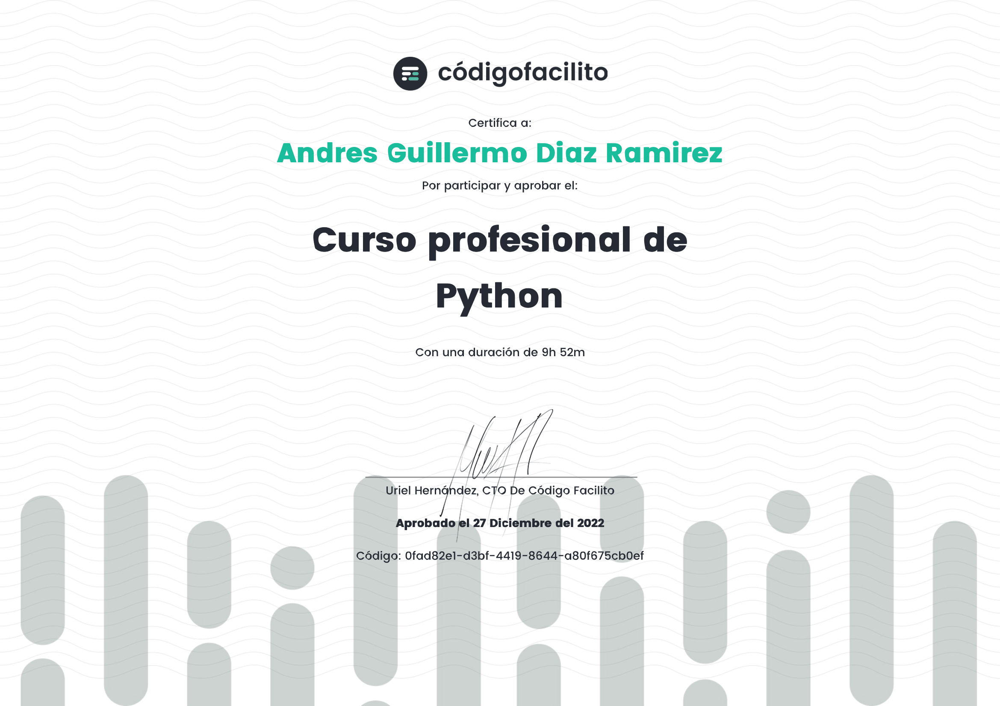
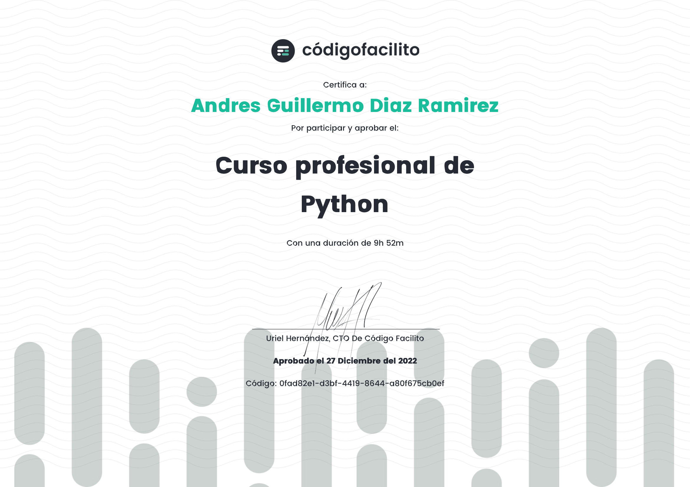

Perfil


Mi nombre es Andrés Guillermo Díaz Ramírez, tengo 10 años de edad, soy de Venezuela y me apaciona el mundo de la informática. Sabemos que nuestro día a día esta rodeado de tecnología, desde lo más sencillo hasta lo más complejo y la evolución de la misma supera nuestra imaginación a pasos acelerados; por ejemplo: una videollamada antes era algo de ciencia ficción pero hoy es una realidad cotidiana para todos. Asi mismo, las comunicaciones son más efectivas a nivel mundial, el idioma no es una limitante, la inteligencia artificial (I.A) es capaz de traducirnos al momento una conversacion. La actualidad esta sesgada por las redes sociales, el comercio local e internacional dependen del marketing digital, en otras palabras vivimos en una sociedad que cada día es más dependiente de la tecnologia, no solo desde el punto de vista social o de recreación, sino también en el ámbito general.
Mision


Actualmente estoy enfocado en adquirir la mayor cantidad y diversidad de conocimientos, que me ayuden a entender desde varios puntos de vista los distintos lenguajes de programación, ya que las especializaciones dentro del mundo de la informática son bastante amplías. Asi mismo, apoyandome en estos canales de información puedo ayudar a motivar a otros jóvenes a interesarse en esta área tan nutrida e importante del conocimiento
 
